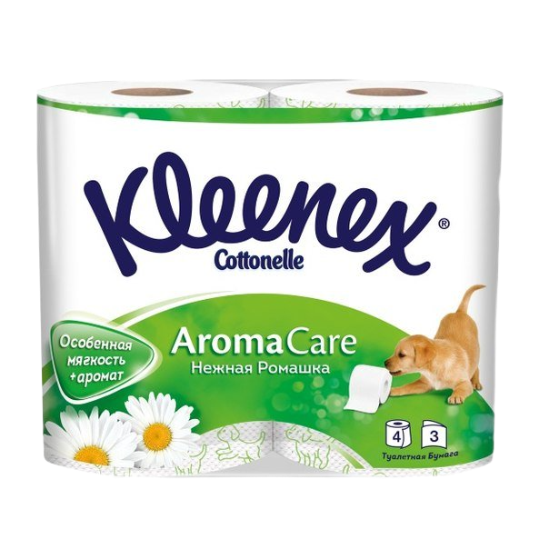

Туалетная бумага Kleenex. С щеночками

Пользуюсь уже 11100100 годов, периодически меняя на «зеву»,
дабы напомнить себе, что «щеночки» все же лучше.
Особенности продукта:
-
Аромат бумаги отменный, порой даже не хочется ее портить.
-
Но что там аромат — дизайн! Обилие щенят по всему рулону заставляет умиляться даже в самый не задавшийся день.
-
Бумага великолепного качества, и смыть ее не составляет никакого труда.
-
Когда бумага с щенятами контактирует с вами, вы испытываете истинное блаженство.
-
Когда я впервые ее попробовал, меня нашли в бессознательном состоянии и обнаженным, обмотанным бумагой с щенятами в туалете.
Рекомендую, 10 из 10.